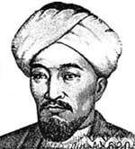

İbn-i Rüşd (1126-1198), İber yarımadası İslamiyet’in kontrolündeyken Orta Çağ İspanyası’nda büyüyen dindar bir İslam filozofudur. İronik bir biçimde Hıristiyan dünyasında çok daha etkili olacaktır. Kitapları 13. yy’da felsefe ve teoloji alanında bir devrimin başlamasına neden olmuştur.

Bu dönemde İspanya’nın başkenti olan Kordoba’da doğan İbn-i Rüşt, ünlü bir hukukçu ailesinin çocuğuydu. Kendisi de kadı oldu. İslami teoloji, tıp ve felsefe alanlarında çalışmıştı. 1182 yılında Halife Ebu Yakup Yusuf ve 1184 yılında onun oğlu Halife Ebu Yusuf Yakup’un kişisel doktoru oldu.
Endülüs olarak adlandırılan İslam egemenliğindeki İspanya, özellikle 12. yy’daki altın çağında önemli bir bilim merkeziydi. İbn-i Rüşt, halifenin himayesinde Antik Yunan filozofu Aristo’nun (MÖ 384-322) eserlerini Arapça’ya çevirmeye başladı. Aynı zamanda antik çağ filozoflarını, başta Gazali (1058-1111) olmak üzere çeşitli Müslüman eleştirmenlere karşı savunan bir eser kaleme aldı.
Endülüs, İbn-i Rüşt’ün yaşamı boyunca bölgeyi fethetmek isteyen Hıristiyan orduları nedeniyle sürekli bir gerginlik içerisindeydi. Halifenin ölümünden sonra İbn-i Rüşt, Kordoba’da gözden düştü. Antik Çağ’ın pagan filozofları hakkında çalışarak İslam’ın altını oymakla suçlandı ve Fas’a sürgüne gönderildi. Eserleri yasaklandı ve halkın önünde yakıldı. 72 yaşındayken sürgünde öldü.
Ölümünden kısa bir süre sonra İbn-i Rüşt’ün Aristo ile ilgili eserleri bir İskoç matematikçi olan Michael Scot (1175-1235) tarafından Latince’ye çevrildi. Bu olay Antik Yunan felsefesinin Avrupa’da yeniden keşfine öncülük edecekti. Aristo’nun Hıristiyan batıya yeniden tanıtılması büyük bir entelektüel atılıma kapı araladı. Albertus Magnus (1193-1280) ve Aquinalı Thomas (1225-1274) gibi İbn-i Rüşt’ü büyük bir ilham kaynağı olarak niteleyen iki yazarın da aralarında bulunduğu Batılı düşünürler ondan çok etkilendiler.
Ek Bilgiler
1- Plato’dan (MÖ 429-347) 1500 yıl sonra yaşamış olmasına rağmen İbn-i Rüşt, ressam Raphael’in (1483-1520) Atina Okulu adlı tablosunda (1510) ünlü antik çağ filozofunun en önemli öğrencilerinden biri olarak resmedilmiştir.
2- İbn-i Rüşt, Hıristiyanlar tarafından Averroes adıyla tanınmış, Avrupa’daki takipçileri ise Averroistler olarak adlandırılmıştır.
3- İbn-i Rüşt’ün memleketi olan Kordoba, 1236 yılında Hıristiyanlar tarafından ele geçirilmiştir. Bu olay, İber yarımadasının Hıristiyanlarca yeniden fethinin önemli bir aşaması olarak görülmektedir.